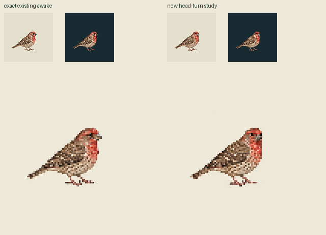
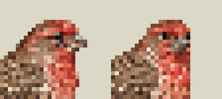
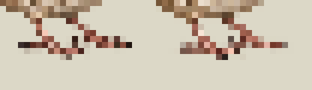

One actual new drawing; exact old awake reused unchanged. One completed native edit; no retry. Unreviewed source packet, no app binding. Actual angle not measured; timing authored.
30Hz: awake30 / look12 / same awake30. Fixed root; no transforms or interpolation. Light/dark panels use1CSS/world, untrimmed96px canvas drawn at96CSS pixels. One-shot replay explicitly resets.
Body, tail and feet also redraw. Fixed alpha-positive markers are pixel probes, not grip approval. Whole1254²native canvas→96²nearest only; no bbox fit, snap, translation, paint, threshold or recolor.



Portable earlier zero-call reuse comparison · Primary sources · Exact frame/action mapping · Exact-clock APNG